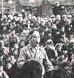
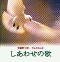
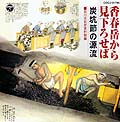
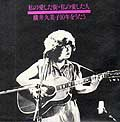
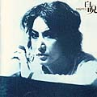
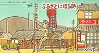

|  |
タイトル 荒木栄作品集 - 不知火 - 三池の闘いと、日本のうたごえ運動が生んだ、労働者作曲家・荒木栄。38歳の生涯をかけて作った「がんばろう」等、 数々の労働歌は今も歌い継がれている。 |
|  |
タイトル 労働歌ベスト - しあわせの歌 - 「しあわせの歌」「聞け万国の労働者」など２１曲を収録。「がんばろう」「三池の主婦の子守歌」等、荒木栄の作品も含まれている。 |
タイトル 三池労組組合歌 - 炭掘る仲間 - 壊れかけたＳＰレコードをＣＤ化し保存。「炭掘る仲間」等5曲入り。製作費18060円。 |
|
|  |
タイトル 香春岳から見下ろせば - 炭坑節の源流 - 炭坑節は元来、炭坑労働の中で自然発生的に生まれた仕事唄であった。このＣＤは採炭から石炭になるまでの仕事唄を 収録した貴重な音の資料。 |
|  |
タイトル 私の愛した街・私の愛した人 - 横井久美子10年をうたう - 筑豊の子守唄、飯場女のうた等21曲収録。昭和54年5月9日読売ホールにて録音。申込み電話03-3200-0101。 |
|  |
タイトル 白呪（びゃくじゅ） 従軍慰安婦の唄、ボタ山の星、ヨイトマケの唄等10曲収録 |
|  |
タイトル ふるさとに贈る詩（第1集） 筑豊の子守唄など5曲を収録。昭和59年、炭鉱の街であった福岡県飯塚市の若い男女ペアが作曲し歌ったもので、 「筑豊の子守唄」については当時NHKで毎日のように放送された。 |